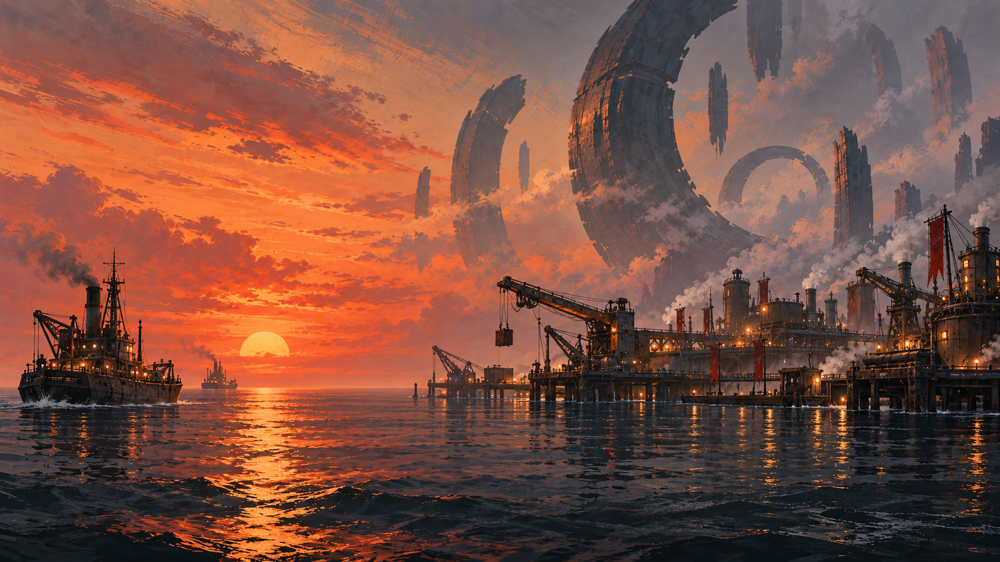
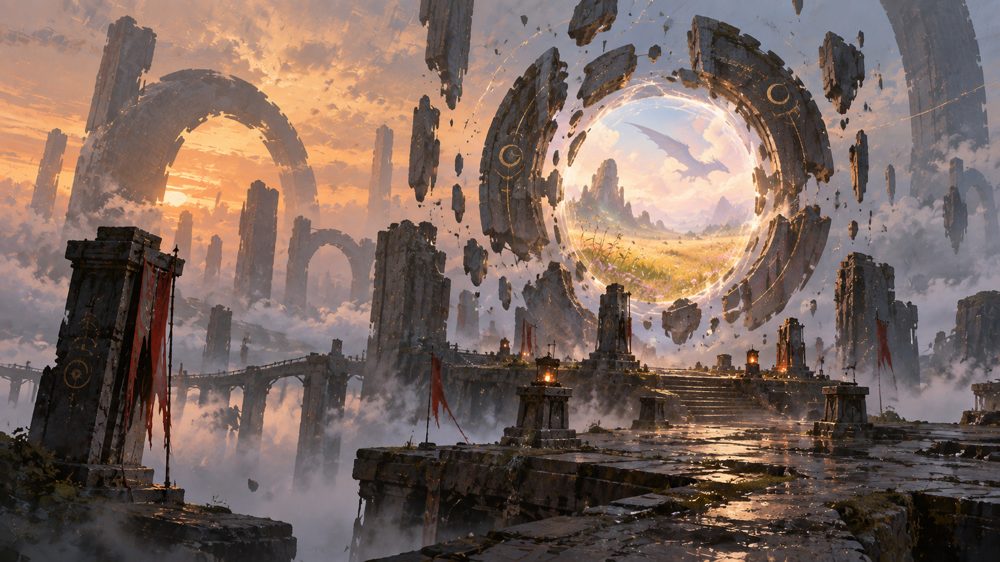
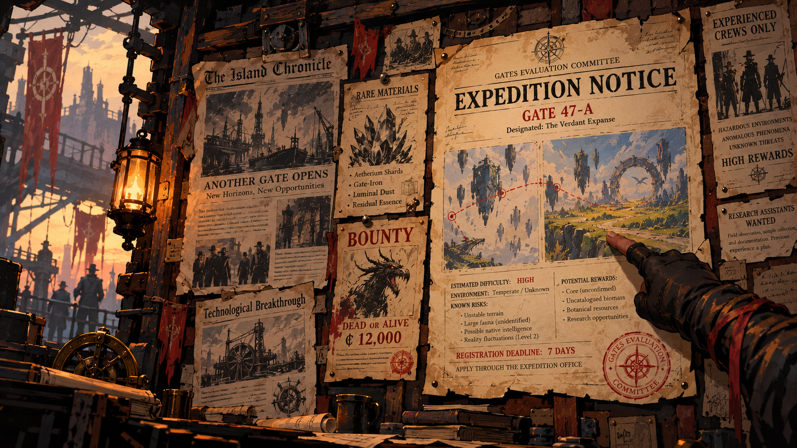

Shared campaign world
Nowhere Expeditions
Build a foothold around impossible ruins. See what the Outpost can do, what it has endured, and what is taking shape.
Explore the Outpost
Build a foothold around impossible ruins. See what the Outpost can do, what it has endured, and what is taking shape.
Explore the Outpost
Browse Gate Records, session records, and the lore Expeditioners have brought back.
Open the Archive
Review the jobs posted at the Outpost and decide which lead your crew wants to pursue.
View the Job Board